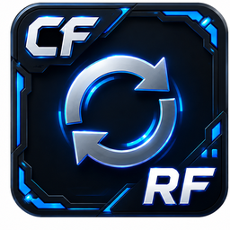

Framework
The shared foundation every application is built on. If you're
building a new application, read Starting a new
app first and use tools/new_app_template.py as your
literal starting point — it already wires up everything described
below.
Every new application in a growing suite tends to reinvent its own window management, its own menu registration, its own settings storage, and its own visual style - producing a collection of tools that don't feel like they belong to the same product, and duplicating the same bugs across each one independently.
Pull the parts every application needs into one shared layer, built once and reused everywhere: a dockable-window base class, filesystem-driven menu discovery with zero registration boilerplate, one settings registry, one config store, one visual identity. A new application starts from a working scaffold, not a blank file.
A fix or improvement to the shared layer (a docking bug, a config edge case, a theme change) benefits every application at once instead of needing to be re-applied per tool - and a reviewer can understand any application's window lifecycle, settings, or styling by reading this one page, not by re-deriving it from each application's own code.
Four shared pieces every application builds on, documented in the sections below.
Dockable windows
Two window shapes exist in CoreTools, and the choice is deliberate per window:
- A top-level application (something you'd launch from the CoreTools
menu and expect to stay open alongside the Maya viewport) is a
dcc.maya.ui.DockableWindowsubclass. - A child window opened from within an app (a Settings dialog,
Script History, a batch-rename prompt, a confirmation) stays a plain
QDialog, parented tomaya_main_window()directly. Apps are dockable; their own child windows aren't.
Every CoreTools window, dockable or not, must parent itself to Maya's main
window (dcc.maya.ui.maya_main_window(), wrapping
omui.MQtUtil.mainWindow()). An unparented top-level Qt widget
behaves like an independent app window — its own taskbar entry,
doesn't raise/lower with Maya.
DockableWindow
class MyApp(dcc_ui.DockableWindow):
WINDOW_OBJECT_NAME = "CF_MyAppWindow" # must be unique across all applications
def __init__(self, parent=None):
super().__init__(parent)
...WINDOW_OBJECT_NAME drives the name of the Maya
workspaceControl backing the window
(workspace_control_name() returns
f"{WINDOW_OBJECT_NAME}WorkspaceControl"), so it must be unique. A
dockable widget's "is one already open" state lives in that
workspaceControl, not in Qt's own topLevelWidgets() — which
is why launching and relaunching go through dedicated helpers rather than
plain construct-and-.show().
Launching: show_dockable(window_class, **show_kwargs)
The normal launch/relaunch entry point, always called from a tool's own main():
def main():
return dcc_ui.show_dockable(MyApp, area="right")- If a workspaceControl with that name already exists, it just restores it
(
cmds.workspaceControl(control_name, edit=True, restore=True)) and returnsNone— it does not delete/recreate. - Otherwise it constructs
window_class(parent=maya_main_window())and calls.show(dockable=True, **show_kwargs), returning the new instance.
deleteUI() on a workspaceControl needs the
Qt event loop to process the deletion before a same-named control can be
safely reconstructed; doing both synchronously races that. Don't
hand-roll a "delete then recreate" pattern — see
rebuild_dockable() below for the one place that actually needs
to do this, and how it avoids the race.
show_dockable() returns None on reuse — two helpers for that case
Because show_dockable() returns None when it reuses an
existing panel, a caller that needs the actual instance (most
commonly: to rebind a per-launch context hook, like AnimHub's "Ask AI"
binding a fresh ClipsAPI on every click) can't rely on its return
value:
window = ai_panel.show()
if window is None:
window = dcc_ui.find_dockable_instance(ai_panel.AIPanel)
if window is not None:
window.set_context(...)find_dockable_instance(window_class)— returns the live widget instance if open (docked or floating), elseNone. SearchesQApplication.instance().allWidgets()(every live widget), not justtopLevelWidgets(), because a docked widget is reparented under the workspaceControl's own layout and is no longer top-level.is_dockable_window_open(window_class)— True only if the tool is actually open right now, not merely if its workspaceControl object still exists. Closing a workspaceControl via its own titlebar/tab close button typically just hides it (visible=False) rather than deleting it, and Maya can persist that hidden control's existence across sessions. This checks bothexists=Trueandquery=True, visible=True— checking existence alone would report a tool as "open" purely because it existed in some past session.
rebuild_dockable() — dev-reload only
Tears the workspaceControl down and reconstructs it against
freshly-reloaded code — the one legitimate "delete then recreate" path,
and it avoids the crash above by splitting the two steps across Maya idle
cycles (cmds.evalDeferred) instead of doing both synchronously.
This exists specifically for
RefreshCoreTools; normal
relaunches should always go through show_dockable().
Menu discovery
A .py file under dcc/maya/menu_tools/ automatically
becomes a Maya menu item — no registration call, no manifest to edit.
The mechanism:
menu_query.pyowns discovery: it walksmenu_tools/recursively and builds a tree (MenuNode). Every subdirectory becomes a submenu; every.pyfile (except__init__.py) becomes a leaf. This is a shared backbone any consumer can read from — today that's just the menu builder, but the same tree could drive a marking menu, a search box, or a launcher grid later without touching this module.menu.pyowns rendering that tree onto Maya's actual menu bar (a tear-off "CoreTools" menu,MENU_NAME = "CoreToolsMainMenu").
The only convention a launcher file needs to follow: define a
module-level main(). No special docstring, attribute, or
decorator. menu_query.run_launcher(dotted_module) imports (or
reloads, if already imported) the launcher module and calls
getattr(module, "main", None), raising if it's missing.
Launcher files are thin shims — the real implementation lives
under tools/. The actual worked example,
menu_tools/Utilities/New_App_Template.py, is the entire
convention in miniature:
"""Menu launcher for the new-app scaffold/reference - thin shim per the
menu_tools convention (see menu_query.py's own docstring: launchers here,
real implementation in tools/new_app_template.py)."""
def main():
from CoreTools.tools import new_app_template
return new_app_template.main()A few more discovery details worth knowing:
- Labels are auto-derived from filenames
(
_label_from_name()): strips.py, replaces_with spaces, splits on case boundaries (UI_Scheme→ "UI Scheme", not "U I Scheme"), and preserves already-uppercase acronyms (CF,UI) instead of lettingstr.title()mangle them. - Icons are looked up by convention: a same-named
.pngnext to the launcher file (MyTool.py→MyTool.png), falling back to a shared default icon if that's missing. This same icon feeds both the Maya main menu item and any CF QuickLaunch stack pinned to that launcher — it's a QuickLaunch/menu-facing icon only, separate from whatever icon (if any) a tool's own window/toolbar uses in-app. The "CF Clean 256" icon set (AI_Companion.png,CF_AnimHub.png,CF_CharacterSetupTool.png,Settings.png,RefreshCoreTools.png) lives here today. - The default icon itself
(
dcc/maya/icons/CF_QuickLaunch.png,menu_query.DEFAULT_ICON) is also QuickLaunch's own brand icon — its config dialog ("Configure QuickLaunch") uses this exact same file as its window icon, so there's one canonical asset for both roles. - Walking into a subfolder that has no
__init__.pyauto-creates an empty one — subfolders don't need to be pre-seeded by hand. iter_leaves(node)gives a flat, depth-first generator over every launcher under a node, for anything that just wants the whole list rather than the tree shape.
menu.build() destroys any existing CoreTools menu first, then
recursively renders the tree via cmds.menuItem. Each leaf's click
handler wraps menu_query.run_launcher(...) in a try/except that
reports failures via cmds.warning(...) instead of raising into
Maya's own UI code — one broken tool never breaks the whole menu.
 Settings dialog + registry
Settings dialog + registry
Four "core" pages (Perforce, AI, Logging, About) are hardcoded directly
into dcc/maya/dialogs/settings.py, since they're
framework-level concerns, not any one app's — Project used to be a
fifth core page here but was relocated entirely into AnimHub's own
Export tab (see AnimHub), since AH is
the only thing that actually needs it to resolve a per-clip export path.
Its Maya-menu/QuickLaunch icon is Settings.png, next to the
Settings.py launcher (see
Menu discovery above) — the dialog itself
doesn't set its own setWindowIcon(). Everything else is an
app-registered page, via settings_registry.py:
from CoreTools.dcc.maya.dialogs import settings_registry
def _build_my_page(parent):
return MySettingsPage(parent)
settings_registry.register_page("My App", _build_my_page)factory(parent)is called once per Settings dialog open and must return aQWidget.- If the returned widget defines a
load()method (no args),CoreSettingsDialogcalls it once right after construction — the "pull current values from config" hook. - There's no
save()hook. CoreTools convention is live-persist-on-edit: a registered page wires its own fields to persist themselves on their own Qt signals, the same as every core page does. Nothing here batches a save on dialog accept. register_page()has no dedup guard — calling it twice registers the page twice. If yourmain()might run more than once in a session (it will, under RefreshCoreTools), guard registration yourself with a module-level flag:_settings_page_registered = False def _register_settings_page(): global _settings_page_registered if _settings_page_registered: return settings_registry.register_page("My App", _build_my_page) _settings_page_registered = True
CoreSettingsDialog(parent=None, initial_page=None) lets a
caller land directly on a specific page by label (e.g. a tool's own
"Tools > Settings..." landing on its own page) via initial_page.
Core pages always occupy the fixed order ("Project", "Perforce", "AI",
"Logging", "About"); app-registered pages are appended after all five
regardless of registration order. If a page factory throws, it's caught,
logged, and skipped — one broken settings page never breaks the whole
dialog.
Module-level settings.show(initial_page=None) is the normal
external entry point — resolves the Maya main window as parent,
constructs the dialog, calls .exec_() (modal), and returns the
dialog instance.
Core page field reference
What's actually on each of the 5 hardcoded pages:
| Page | Fields |
|---|---|
| Project | Three radio buttons for ProjectMode (Maya / Perforce /
Custom), a path field + browse button shown only in Custom mode, a
read-only label showing the live-resolved root (or an amber warning if
resolution fails), and a manual refresh button. |
| Perforce | An enable checkbox (rest of the page hidden when off),
server/user/client fields, an "auto checkout on edit" checkbox, a Test
Connection button (tests the currently-typed fields, not necessarily
the saved ones) with a pass/fail result label, and an
install/update-p4python button with a live installed-or-not
status label. |
| AI | Provider combo (populated from
PROVIDERS), an
install/update button for that provider's SDK, an API key field
(password-masked, with a show/hide toggle, disabled entirely if
keyring isn't installed) with a label explaining where it's
stored, and an editable model combo with a "fetch real model list from
the provider's API" refresh button (requires a key to already be
set). |
| Logging | A level combo (DEBUG/INFO/WARNING/ERROR,
calling core_log.reconfigure() on change), a "log to file"
checkbox, a folder field + browse button (shown only when file logging
is on), and an "open log folder" button. |
| About | Informational only, no controls: a short blurb on what CoreTools is, a pointer to the AI page for the AI Companion's own setup, and a note that Project/Perforce config here is shared foundation any current or future CoreTools app can read. |
Every field on every page persists immediately on its own signal
(editingFinished, toggled, currentIndexChanged, ...)
straight to UserConfig — there's a single primary "close"
button at the bottom of the dialog and no Cancel, consistent with the
live-persist convention described above.
App-registered pages
Pages an application adds itself via register_page(),
appended after the five core pages above in the order shown here.
AnimHub is currently the only application with app-specific fields
worth calling out individually:
| Page · tab | Fields |
|---|---|
| AnimHub · Interface | Default row style (Optimized / Compact / Preview — see
Clip row anatomy), an
"enable clip preview" toggle for the hover popup, preview delay (ms,
default 1200 — see
Hover preview
popup), and preview playback speed (fps, default 52). The
playback-speed field is read fresh from UserConfig on
every hover, never cached, so a change here takes effect on the very
next hover with no relaunch — see
Clip preview
thumbnails for how it's applied. |
| AnimHub · Export | Project root mode (Maya Project / P4 Workspace / Custom — moved here from the generic Project page, since AnimHub's own export path resolution was always its only real consumer), a global export folder (the fallback used when no project root resolves), and File Type (ASCII / Binary, default ASCII). See Export pipeline for how these feed the actual FBX write. |
Config (UserConfig)
core/config.py's UserConfig is the shared,
registry-backed (QSettings, a single per-user Windows registry
key namespaced to this project) settings store every application reads
and writes through — one store, section-addressed, not one file per
app.
from CoreTools.core import config as core_config
cfg = core_config.UserConfig()
cfg.get(section, key, default) # single value, type-coerced to match `default`
cfg.set(section, key, value) # single value, persists immediately
cfg.section(section) -> dict # every key in a section, defaults merged in
cfg.update_section(section, mapping) # bulk write
cfg.reset() # clears everything back to DEFAULTSDEFAULTS (a module-level dict in config.py) only needs
an entry for a section if something needs to enumerate that
section's keys generically (section(), a Settings page's
load()). A tool reading one key with its own explicit default
(cfg.get("my_app", "some_key", 0)) doesn't need a
DEFAULTS entry at all — new_app_template.py
deliberately skips adding one for its own demo key, to keep the bar for
"just persist one setting" low.
UserConfig is a singleton (__new__-based) —
constructing it anywhere gets you the same underlying QSettings
connection.
Logging
Built on Python's stdlib logging, not a custom system — one
shared logger tree rooted at "CoreTools".
from CoreTools.core import log as core_log
log = core_log.get_logger(__name__)
log.info("...")
log.warning("...")
log.exception("...") # inside an except block - includes the tracebackget_logger() calls configure() first (idempotent), so
nothing needs explicit init-order handling. Passing __name__ from
anywhere inside CoreTools lands correctly in the
"CoreTools.*" subtree without double-prefixing.
- Always-on console handler — Maya's own Script Editor already captures stdout, so this is the "visible in Maya" path with zero extra plumbing.
- Optional rotating file handler — only if Settings > Logging has "log to file" enabled. 2MB per file, 3 backups, a local per-user log directory by default. A bad/unwritable log directory degrades to console-only rather than blocking the calling app's startup.
logger.propagate = False— deliberately doesn't bubble to Python's own root logger, avoiding double-logging if something else in the process already has root handlers configured.reconfigure()isconfigure(force=True)— call it right after a Settings > Logging change so a level/file-logging toggle takes effect immediately rather than requiring a relaunch.force=Trueis also what lets a RefreshCoreTools hot-reload of this module actually pick up new config, rather than silently no-op-ing because the module-level "already configured" guard was never reset.
Project root + Perforce
core/project.py — get_project_root()
The one function every application should call instead of inventing its own
root-finding logic. Reads the mode from Settings > Project
(ProjectMode.MAYA / .P4 / .CUSTOM) and resolves
accordingly:
- Maya mode —
cmds.workspace(query=True, rootDirectory=True). - P4 mode —
core.p4.p4().project_root(). - Custom mode — a path typed directly into Settings.
Returns "" when unresolvable rather than raising — callers
decide how to handle a missing root (AnimHub's export path resolution
falls through to its own next-tier fallback, for example).
core/p4/client.py — P4Client
A direct P4Python integration (clean-room, not a
port). Pure logic — no maya.cmds, no dialogs — so it's
importable from plain mayapy too. Access through the module-level
singleton accessor, not by constructing directly:
from CoreTools.core import p4 as core_p4
core_p4.p4().checkout(path)Off by default (Settings > Perforce > Enable). With
server/user/client left blank, it falls back to P4Python's own environment
resolution (P4CONFIG, P4PORT/P4USER/P4CLIENT) — a
user with a normal system P4 setup gets a working connection with zero
CoreTools-side config. Explicit values in Settings always override.
Status is one of STATUS_OK / STATUS_OFFLINE /
STATUS_DISABLED (.status / .is_available). Common
operations: checkout, add_or_checkout, sync_file /
sync_path, revert, opened_files(), file_status(),
scene_status() (one of "In Sync" / "Off Sync" /
"Checked Out" / "Not In Depot"), project_root(),
client_workspace(). Every operation wraps its own connect()
and swallows/logs failures rather than propagating — callers get a safe
falsy/empty value back, not an exception to catch everywhere.
dcc/maya/p4_status_bar.py — P4StatusBar
A reusable status strip (timestamp | project pill | status dot+text | workspace | user@machine) any P4-aware app can drop into its layout:
self.p4_bar = P4StatusBar()
layout.addWidget(self.p4_bar)
...
self.p4_bar.refresh() # call after anything that might change P4 stateThere's no registration mechanism — it's a plain widget,
refresh-on-demand (only its clock label ticks on its own timer). It
hides itself entirely when P4 is disabled, rather than
showing inert "P4 Disabled" chrome — its whole premise is "this app is
using P4 right now." dcc/maya/p4_ui.py layers interactive
cmds.confirmDialog-driven flows on top (an offline warning, an
interactive scene-status check-and-act flow) for apps that want a blocking
prompt rather than just the status strip.

RefreshCoreTools (dev reload)menu_tools/RefreshCoreTools.py is the dev-loop tool: rebuild
the CoreTools menu, reinstall the QuickLaunch toolbar widget, and refresh
any currently-open dockable tools — all without restarting Maya. Has
its own menu icon (RefreshCoreTools.png, from the CF Clean 256
set) rather than falling back to the shared default.
importlib.reload() isn't enough: it
only re-executes one module's own top-level code. A
from X import Y statement inside it just re-binds to the
already-cached X, it does not transitively reload X.
Separately — and this is the "why doesn't my edit show up" gotcha
every app in this suite has hit at least once — reloading a module's
code does not change the class of an already-constructed
instance. reload() replaces the class object the module name
points to, but a live window's __class__ still points at the old
class object, so its methods keep running old code until the instance
itself is torn down and reconstructed against the freshly reloaded class.
What RefreshCoreTools actually does:
- Walks
sys.modulesfor everything under"CoreTools", sorts by dot-count descending (deepest/leaf modules first), and callsimportlib.reload()on each — a mitigation for the from-import staleness problem above, not a complete fix. Each reload is individually try/excepted; one failure is logged and skipped, not fatal to the rest. - Rebuilds the menu (
menu.build()) and reinstalls QuickLaunch. - Refreshes open dockable tools via a hardcoded registry,
DOCKABLE_TOOLS— a tuple of(dotted_module, window_class_attr)pairs. Any new dockable application needs a manual entry added to this tuple to be refresh-aware — it is not auto-discovered. For each entry already open (checked viais_dockable_window_open()), it callsdcc_ui.rebuild_dockable(window_class, area="right")— the one legitimate caller of that function, since it's the one case that genuinely needs the code to change under an existing window.
Only tools that are already open get rebuilt — nothing is force-launched by a refresh.
Visual design system
dcc/maya/theme.py is CoreTools' own visual identity — not a
copy of Maya's or of any other tool's. Cool neutral grays for nearly
everything, no role-based button coloring (Add/Remove/Save all
read the same neutral gray), and a single warm amber accent reserved for
interactive feedback, distinct from the one blue reserved for the primary
action.
| Token | Hex | Use |
|---|---|---|
Color.BG | #2b2e35 | Window base |
Color.BG_ELEV | #23262c | Panels, inputs, trees |
Color.BORDER | #3a3d44 | Neutral card/input borders |
Color.TEXT / TEXT_DIM | #dcdcdc / #8b8e96 | Primary / secondary text |
Color.ACCENT | #e8a33d | Amber — focus rings, pressed state, selected rows. Not the primary-button color. |
Color.HEADER | #29abe2 | Bold blue — section titles |
Color.SUBTITLE | #5b8fa8 | Muted blue, one step down from HEADER — small secondary captions |
Color.PRIMARY | #4fc3f7 | Lighter blue — reserved for the single primary action button, and the "signature outline" |
Color.STATUS_OK / STATUS_OFFLINE | #6fa870 / #e25c5c | Connection-status semantics (P4, AI provider key, etc.) — a separate signal class from ACCENT/PRIMARY |
MAIN_STYLE is the full shared QSS every application applies via
self.setStyleSheet(theme.MAIN_STYLE). tools/ui_scheme.py
("CF UI Scheme") is the living reference for it — a page rendering one
of every styled widget type, meant to be launched after any theme.py edit
so a palette/spacing change can be eyeballed in one place instead of
chased across every dialog.
Small captions: subtitleLabel
A reusable small-caption convention for labeling a sub-section that doesn't need a full heading (Character Setup Tool's "SOCKETS" label, CF QuickLaunch's "PRESETS" label): muted blue, 8pt, semi-bold.
label = QtWidgets.QLabel("MY SECTION")
label.setObjectName("subtitleLabel")AnimHub's own "FILTER VIEW"/"ACTIONS" toolbar captions (see
AnimHub) use a visually similar but
deliberately separate, dimmer light-blue tint instead of this shared rule
— styled locally (theme.rgba(theme.Color.PRIMARY, 100)) rather
than through subtitleLabel, specifically so tuning it doesn't
shift every other caption using the shared convention along with it.
The signature outline
A faint, translucent Color.PRIMARY-blue 2px
border around a application's own outer edge — the one deliberate piece of
"branding" shared across every application, tried first on AnimHub and
promoted here once confirmed live ("if we like it we'll add them to all CF
tools"). Widened from an initial 1px once the whole scheme was in live
use.
self.setStyleSheet(theme.MAIN_STYLE)
theme.apply_signature_outline(self) # must come after objectName() is already setMust be called after the window's objectName() is
already set (a DockableWindow sets it from
WINDOW_OBJECT_NAME automatically in its own __init__,
before your subclass body runs, so this is almost always safe to call
right after setStyleSheet). It scopes the border via that
existing object name — giving a dockable window a new
setObjectName() just for this purpose breaks Maya's own
workspaceControl naming ("...WorkspaceControl is not unique").
A window with its own QMenuBar needs the matching helper too, so
the outline doesn't visibly stop short of the menu bar's own top edge:
self.menu_bar = QtWidgets.QMenuBar()
theme.apply_signature_outline_to_menu_bar(self.menu_bar)Every top-level application has this applied (AnimHub, Character Setup
Tool, Clip Previewer, the AI Companion) and it's baked directly into
tools/new_app_template.py, so a new app gets it for free without
needing to remember to add it. It isn't limited to full dockable windows,
either — QuickLaunch (QuickLaunch),
a small widget embedded directly into Maya's own ToolBox rather than a
standalone app, carries just this outline with none of the rest of
MAIN_STYLE applied, so it stays visually native to the ToolBox
while still reading as unmistakably a CF surface.
Starting a new app
tools/new_app_template.py is the copyable scaffold — a real,
working, deliberately over-complete reference rather than a stub. Three
steps, straight from its own docstring:
- Copy the file to a new name; rename
_TemplateAppto your app's class name (keep theCFprefix convention onWINDOW_OBJECT_NAME). - Copy
menu_tools/Utilities/New_App_Template.pyalongside it (or into a category subfolder — subfolders become submenus, see Menu discovery) — this becomes your launcher. - Delete whatever you don't need — the demo settings page, the config example, the demo counter all exist purely as a complete worked example, not a required shape.
What the template demonstrates, all of which every real application has converged on:
- Dockable, launched via
show_dockable(), never constructed/.show()'d directly. - The two-layout margin convention: a tight 2px
outerlayout against the dock/window edge (matching native Maya panel chrome), with the real interior padding (14px) living on a separatecontentwidget inside it. Collapsing these into one layout would force a single margin value to serve two different jobs.outer = QtWidgets.QVBoxLayout(self) outer.setContentsMargins(2, 2, 2, 2) content = QtWidgets.QWidget() content_layout = QtWidgets.QVBoxLayout(content) content_layout.setContentsMargins(14, 14, 14, 14) content_layout.setSpacing(12) outer.addWidget(content, 1) theme.apply_signature_outline(self)right aftersetStyleSheet.- A
"sectionHeader"-styled label for the app's main heading, and a single"primary"-named button for its one affirmative action — matching the Settings dialog's own single-primary-button convention. log = core_log.get_logger(__name__)at module level instead of bareprint().core.config.UserConfigfor anything that should persist, with noDEFAULTSentry needed unless something needs to enumerate the section generically.- An optional Settings page, registered with the double-registration guard shown in Settings dialog + registry.